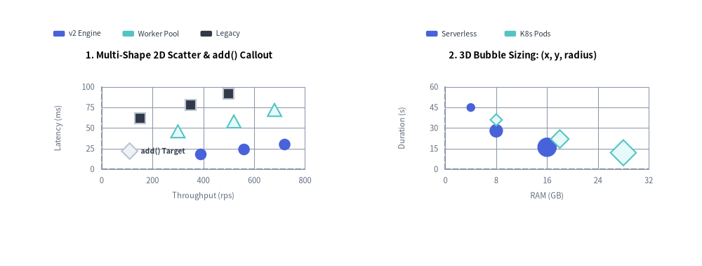
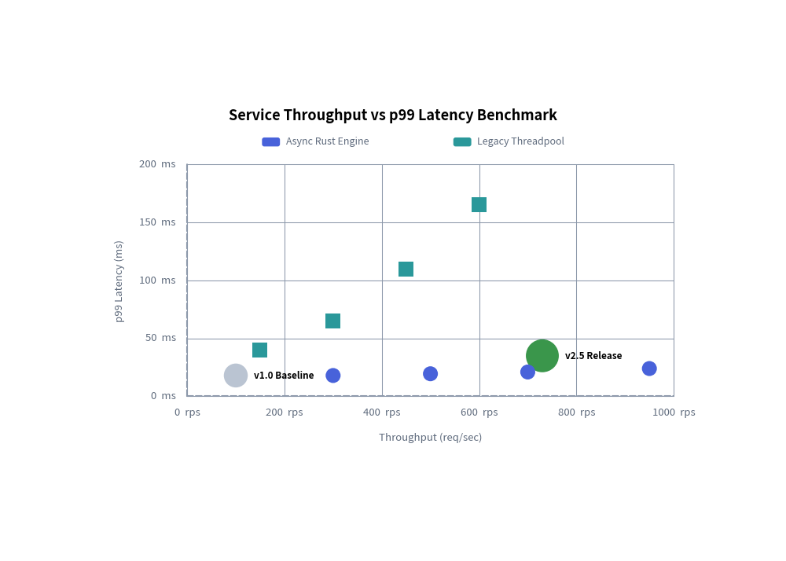
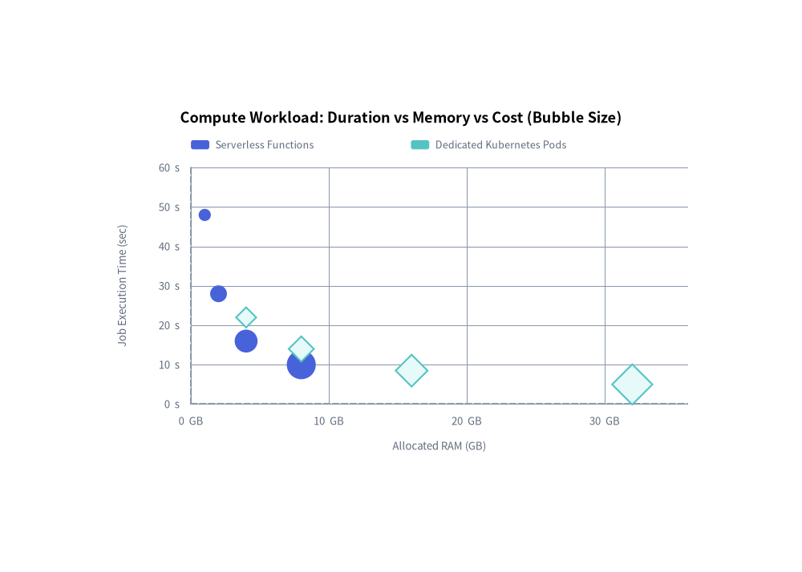

ScatterChart: Dual-Axis Plots & Multidimensional Bubble Charts
ScatterChart (drawlib.charts.scatter) plots continuous numerical data across dual Cartesian axes ($X$ and $Y$). It is ideal for identifying statistical correlations, clustering patterns, latency vs. throughput trade-offs, and 3D bubble analysis (where marker radius encodes a third numerical variable).
1. Overview & Topologies

Source Code
from drawlib.canvas import save, setup
from drawlib.charts.scatter import ScatterChart
from drawlib.styles import Styles
setup(width=132, height=55)
# Left: 2D Scatter with Multiple PointShapes & add() Callout
scatter_2d = ScatterChart(
axis_line_style=Styles.MutedDashed,
axis_text_style=Styles.Muted.patch(text_size=10.0),
value_text_style=Styles.DarkBold.patch(text_size=10.0),
grid_style=Styles.MutedThin,
width=58.0,
height=38.0,
title="1. Multi-Shape 2D Scatter & add() Callout",
title_style=Styles.BlackBold.patch(text_size=11.0),
)
scatter_2d.configure_x_axis(label="Throughput (rps)", min_value=0, max_value=800, tick_step=200)
scatter_2d.configure_y_axis(label="Latency (ms)", min_value=0, max_value=100, tick_step=25)
scatter_2d.add(xy=(90, 32), style=Styles.Neutral, radius=1.5, shape="rhombus", label="add() Target")
scatter_2d.add_series("v2 Engine", [(420, 18), (580, 24), (720, 30)], style=Styles.PrimaryFlat, shape="circle", radius=1.2)
scatter_2d.add_series("Worker Pool", [(340, 48), (520, 58), (680, 72)], style=Styles.SecondaryNeutral, shape="triangle", radius=1.3)
scatter_2d.add_series("Legacy", [(150, 66), (350, 78), (500, 92)], style=Styles.Dark, shape="square", radius=1.1)
scatter_2d.draw(xy=(4.0, 8.0))
scatter_2d.draw_legend(xy=(8.0, 48.0), text_style=Styles.Dark.patch(text_size=10.0), orientation="horizontal", item_gap=3.0)
# Right: 3D Proportional Bubble Plot (x, y, radius)
bubble_3d = ScatterChart(
axis_line_style=Styles.MutedDashed,
axis_text_style=Styles.Muted.patch(text_size=10.0),
grid_style=Styles.MutedThin,
width=58.0,
height=38.0,
title="2. 3D Bubble Sizing: (x, y, radius)",
title_style=Styles.BlackBold.patch(text_size=11.0),
)
bubble_3d.configure_x_axis(label="RAM (GB)", min_value=0, max_value=32, tick_step=8)
bubble_3d.configure_y_axis(label="Duration (s)", min_value=0, max_value=60, tick_step=15)
bubble_3d.add_series(
"Serverless",
[(4, 45, 0.9), (8, 28, 1.4), (16, 16, 2.0)],
style=Styles.PrimaryFlat,
shape="circle",
)
bubble_3d.add_series(
"K8s Pods",
[(8, 36, 1.1), (18, 22, 1.7), (28, 12, 2.4)],
style=Styles.SecondaryNeutral,
shape="rhombus",
)
bubble_3d.draw(xy=(70.0, 8.0))
bubble_3d.draw_legend(xy=(78.0, 48.0), text_style=Styles.Dark.patch(text_size=10.0), orientation="horizontal", item_gap=4.0)
save()
- Dual Continuous Axes: Unlike categorical charts where the X-axis represents discrete bins,
ScatterChartcomputes independent numerical scales for bothx_axisandy_axisusing linear ("linear") or logarithmic ("log") scaling. - Five Marker Shapes (
PointShape): Supports"circle","square","rhombus","triangle", and"none"(useful when rendering text-only callout points viaadd(..., shape="none", label="...")). - Annotated Individual Points (
add): Place standalone reference points with dedicatedlabelandlabel_stylecallouts. - Multidimensional Bubble Plots (
add_series): Passing 3-tuples(x, y, radius)indatascales each marker's radius individually to communicate a third quantitative dimension.
2. Benchmark Scatter Plot with Baseline Callouts & Marker Shapes
Combining multi-series runs ("circle", "square", "triangle") with individually annotated reference points ("rhombus") makes system performance comparisons immediately actionable:
from drawlib.canvas import save, setup
from drawlib.charts.scatter import ScatterChart
from drawlib.styles import Styles
setup(width=105, height=75)
chart = ScatterChart(
axis_line_style=Styles.MutedDashed,
axis_text_style=Styles.Muted.patch(text_size=10.5),
value_text_style=Styles.BlackBold.patch(text_size=10.0),
grid_style=Styles.MutedThin,
width=85.0,
height=52.0,
title="Service Throughput vs p99 Latency Benchmark",
title_style=Styles.BlackBold.patch(text_size=13.0),
)
chart.configure_x_axis(label="Throughput (req/sec)", unit=" rps", min_value=0, max_value=1000)
chart.configure_y_axis(label="p99 Latency (ms)", unit=" ms", min_value=0, max_value=200)
# 1. Annotated Reference Points with Rhombus & Triangle Shapes
chart.add(xy=(100.0, 20.0), style=Styles.Neutral, radius=1.5, shape="rhombus", label="v1.0 Baseline")
chart.add(xy=(720.0, 38.0), style=Styles.PrimaryNeutral, radius=1.8, shape="triangle", label="v2.5 Target")
# 2. Multi-Series Experimental Runs
chart.add_series(
name="Async Rust Engine",
data=[(360, 18.0), (540, 19.5), (720, 21.0), (950, 24.0)],
style=Styles.PrimaryFlat,
shape="circle",
)
chart.add_series(
name="Go Worker Pool",
data=[(320, 42.0), (480, 54.0), (650, 68.0), (850, 92.0)],
style=Styles.SecondaryNeutral,
shape="triangle",
)
chart.add_series(
name="Legacy Threadpool",
data=[(150, 45.0), (300, 75.0), (450, 120.0), (600, 168.0)],
style=Styles.Dark,
shape="square",
)
chart.draw(xy=(10.0, 10.0))
chart.draw_legend(xy=(18.0, 56.0), text_style=Styles.Muted.patch(text_size=10.0), orientation="horizontal")
save()

3. Multidimensional Cloud Cost Bubble Chart
By providing 3-tuples (x, y, radius) in add_series(data=...), each point's radius encodes a 3rd numerical dimension:
from drawlib.canvas import save, setup
from drawlib.charts.scatter import ScatterChart
from drawlib.styles import Styles
setup(width=105, height=75)
chart = ScatterChart(
axis_line_style=Styles.MutedDashed,
axis_text_style=Styles.Muted.patch(text_size=10.5),
grid_style=Styles.MutedThin,
width=85.0,
height=52.0,
title="Compute Workload: Duration vs Memory vs Cost (Bubble Size)",
title_style=Styles.BlackBold.patch(text_size=13.0),
)
chart.configure_x_axis(label="Allocated RAM (GB)", unit=" GB", min_value=0, max_value=36)
chart.configure_y_axis(label="Job Execution Time (sec)", unit=" s", min_value=0, max_value=60)
# 3-Tuples encode: (RAM_GB, Execution_Time_Sec, Relative_Monthly_Cost_Radius)
chart.add_series(
name="Serverless Functions",
data=[(1.0, 48.0, 0.8), (2.0, 28.0, 1.1), (4.0, 16.0, 1.5), (8.0, 10.0, 1.9)],
style=Styles.PrimaryFlat,
shape="circle",
)
chart.add_series(
name="Dedicated Kubernetes Pods",
data=[(4.0, 22.0, 1.2), (8.0, 14.0, 1.5), (16.0, 8.5, 1.9), (32.0, 5.0, 2.4)],
style=Styles.SecondaryNeutral,
shape="rhombus",
)
chart.draw(xy=(10.0, 10.0))
chart.draw_legend(xy=(22.0, 56.0), text_style=Styles.Muted.patch(text_size=10.5), orientation="horizontal")
save()

4. API Reference
Constructor (ScatterChart)
All constructor arguments are keyword-only (*):
from drawlib.charts.scatter import Axis, DrawDirection, Point, PointShape, ScaleType, ScatterChart, Series
chart = ScatterChart(
*,
axis_line_style: Style,
width: float = 88.0,
height: float = 55.0,
default_radius: float = 1.0,
default_shape: PointShape = "circle",
axis_text_style: Style | None = None,
grid_style: Style | None = None,
value_text_style: Style | None = None,
background_style: Style | None = None,
title: str = "",
title_style: Style | None = None,
)
| Parameter | Type | Default | Description |
|---|---|---|---|
axis_line_style |
Style |
Required | Mandatory style anchor for the X and Y coordinate baseline strokes. |
width / height |
float |
88.0 / 55.0 |
Total bounding box dimensions of the chart in canvas units. |
default_radius |
float |
1.0 |
Default marker radius when radius is omitted in add() or add_series(). |
default_shape |
"circle" | "square" | "rhombus" | "triangle" | "none" |
"circle" |
Default marker shape (PointShape) when shape is omitted. |
axis_text_style |
Style | None |
None |
Style for X and Y axis tick labels and axis titles. If None, labels are omitted. |
grid_style |
Style | None |
None |
Style for horizontal and vertical Cartesian gridlines. If None, gridlines are omitted. |
value_text_style |
Style | None |
None |
Default style for point text annotations (Point.label) when label_style is not set on the point. |
background_style |
Style | None |
None |
Style for the outer chart background card. If None, card is omitted. |
title |
str |
"" |
Chart title text rendered at the top of the container. |
title_style |
Style | None |
None |
Typography style for title. Required for the title to render. |
Methods & Properties
add(xy: tuple[float, float], style: Style, radius: float | None = None, shape: PointShape | None = None, label: str = "", label_style: Style | None = None, *, show: bool = True) -> Point: Registers a standalone(x, y)data point and returns the mutablePointinstance.radius/shape: Per-point marker size and shape override ("circle","square","rhombus","triangle","none").label/label_style: Optional callout text rendered next to the point (useslabel_styleor falls back tochart.value_text_style).
add_series(name: str, data: list[tuple[float, float]] | list[tuple[float, float, float]], style: Style, radius: float | None = None, shape: PointShape | None = None, legend_text_style: Style | None = None, *, show: bool = True, draw_ratio: float = 1.0, draw_direction: DrawDirection = "left_to_right") -> Series: Registers a named group of(x, y)or(x, y, radius)points and returns the mutableSeriesinstance.draw_ratio&draw_direction: Partial spatial rendering ("left_to_right"reveals points progressively across the X-axis range;"bottom_to_top"raises points from the bottom axis while scaling their radius bydraw_ratio).
configure_x_axis(...) -> Axis/configure_y_axis(...) -> Axis: Configures continuous numerical X or Y axis bounds, linear/logarithmic scaling, tick steps, formatters, units, and axis labels. See Axes, Scales & Legends.get_size() -> tuple[float, float]: Returns(width, height)of the chart container.draw(xy: tuple[float, float] = (0.0, 0.0), *, width: float | None = None, height: float | None = None, scale: float = 1.0) -> None: Renders the chart anchored at bottom-leftxy, with optional temporary size overrides and proportionalscale.draw_legend(xy: tuple[float, float], text_style: Style, orientation: Literal["vertical", "horizontal"] = "vertical", swatch_size: tuple[float, float] = (2.4, 1.2), item_gap: float = 4.0, *, scale: float = 1.0) -> None: Renders the decoupled series legend atxy.- Properties:
chart.points -> list[Point]: Returns a copy of standalonePointobjects registered viaadd().chart.series -> list[Series]: Returns a copy ofSeriesobjects registered viaadd_series().chart.x_axis -> Axis/chart.y_axis -> Axis: Direct access to the horizontal and verticalAxisinstances.